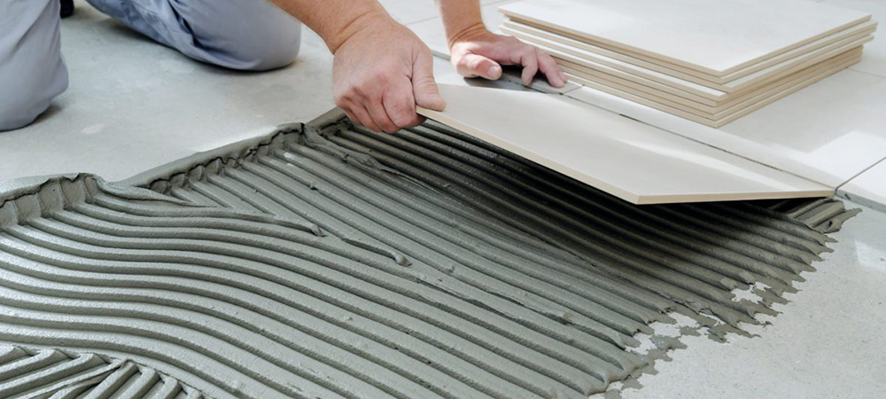
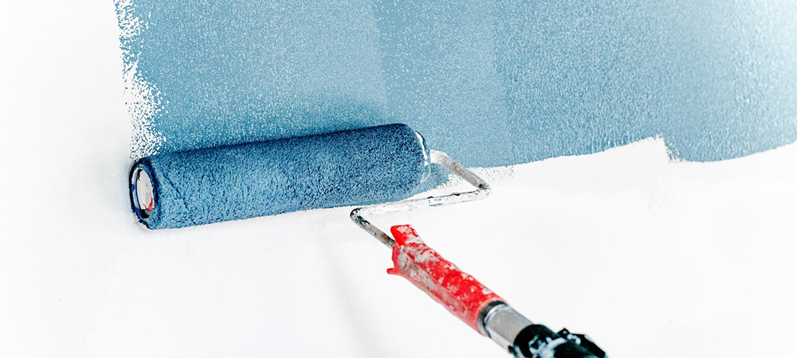
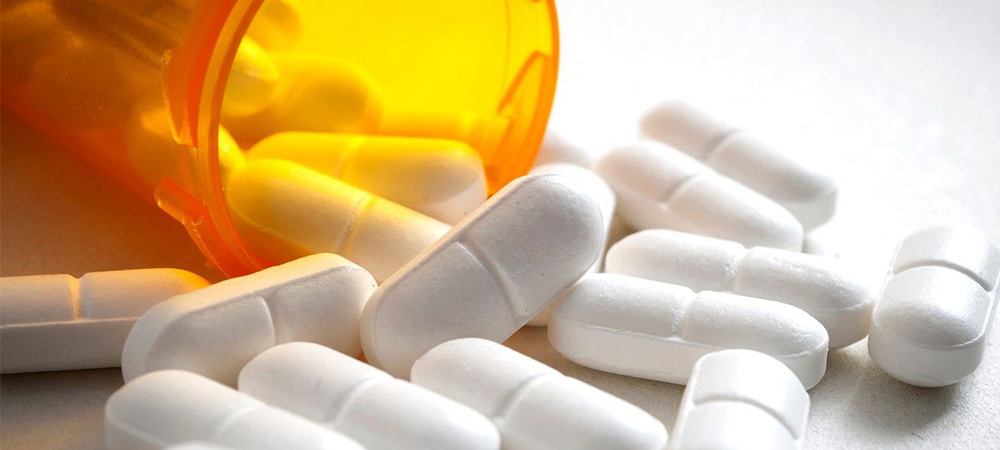
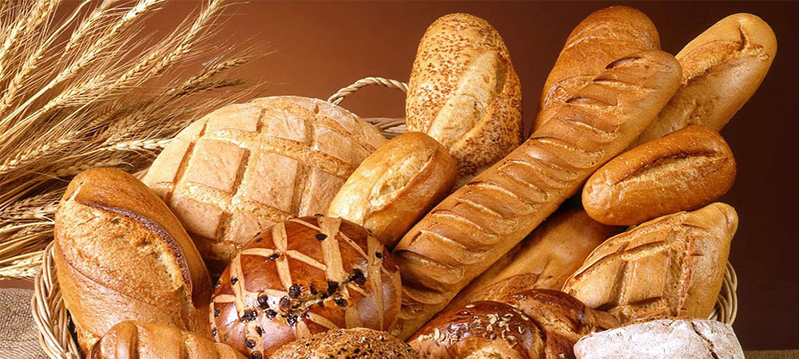
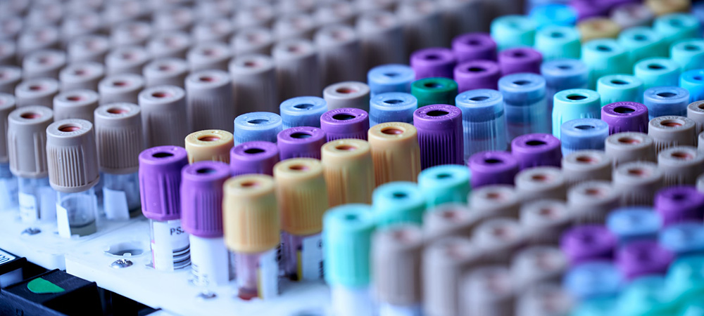

-

MECELLOSE®
- 시멘트용 첨가제 메셀로스(MECELLOSE®)
-
친환경적 소재인 메셀로스는 목재, 면화에서 얻어진 셀룰로오스(Cellulose)를 원료로 합니다.
무독성 백색 파우더로 건축용 시멘트에 첨가되어 증점성, 보수성, 윤활성, 안정성 등의 기능을
부가하는 수용성 고분자 제품입니다.
-

HECELLOSE®
- 페인트용 첨가제 헤셀로스(HECELLOSE®)
-
친환경적 소재인 헤셀로스는 목재, 면화에서 얻어진 셀룰로오스(Cellulose)를 원료로
합니다. 무독성 백색 파우더로 페인트 및 삼푸 등의 헬스케어 제품에 첨가되어 증점성, 보습
효과 등의 기능을 향상시키는 수용성 고분자 제품입니다.
-

AnyCoat®
- 의약용 캡슐원료 애니코트(AnyCoat®)
-
무독성 백색 파우더 제품으로 점성, 수용성, 보수성 등을 이용하여 약물의 전달기능(알약용
코팅 및 캡슐 원재료)을 향상시키는 고기능성 제품입니다.
-

AnyAddy®
- 식품용 첨가제 애니애디(AnyAddy®)
-
HPMC(Hydroxypropyl Methylcellulose)와 MC(Methylcellulose)로 구성되어 있으며,
AnyAddy®의 HPMC와 MC는 EU, FDA, 그리고 FAO/WHO에서 식품 원료로서 인정받고
Kosher 및 Halal 인증을 보유한 안전한 식품 소재입니다. 무독성 백색 파우더 제품으로
점성, 수용성, 보수성 등을 이용하여 식품의 식감을 개선하는 제품입니다.
-

EUROX®
- 질소산화물저감제 유록스(EUROX®)
-
유록스는 롯데정밀화학에서 독자적으로 개발한 브랜드로서 차량용, 선박/산업용 CR장치에서
질소산화물 저감 목적의 촉매환원제 역할을 하는 요소수 용액입니다. 롯데정밀화학은
고품질의 원료를 사용하여 까다로운 생산공정과 품질관리 및 검수과정을 통해 세계최고
수준의 차량용 및 선박용 유록스를 생산하고 있습니다.